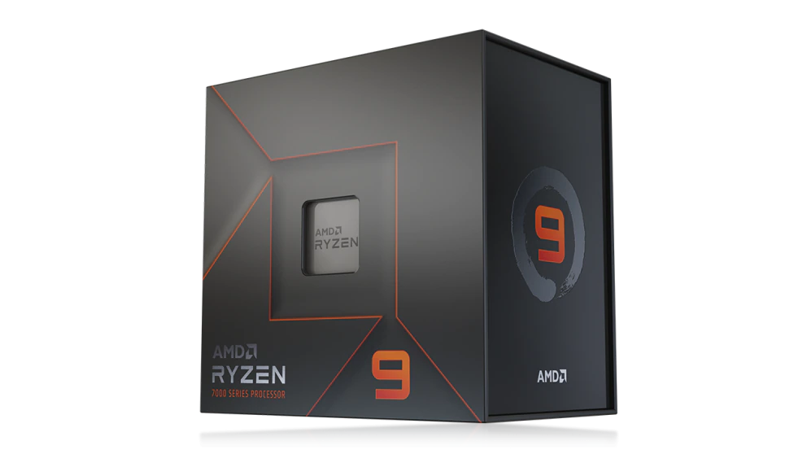

CAMBIA TU FORMA DE JUGAR
Cuando tu PC usa el procesador de escritorio más avanzado del mundo que existe para jugadores, te puedes concentrar en lo que verdaderamente importa: ganar en el campo de batalla digital. No importa si quieres jugar los últimos lanzamientos o revivir un clásico: los procesadores AMD Ryzen™ de la serie 7000 te dan una potencia de juego arrasadora con los núcleos “Zen 4” de alto rendimiento. Con hasta 16 núcleos, 32 subprocesos, velocidades turbo máximas de 5,7 GHz2 y caché de hasta 80 MB, los procesadores AMD Ryzen serie 7000 ofrecen un rendimiento que lo cambia todo.
Ryzen Procesador.
Producto de mejor Calidad
| RANKING | LENGUAJES |
|---|---|
| 1° | PYTHON |
| 2° | JAVA |
| 3° | C# |
| 4° | C++ |


Imagenes y Video
El futuro de los procesadores Ryzen
Los procesadores de la flamante serie AMD Ryzen 7000 están diseñados con toda la potencia y prestaciones de las últimas tecnologías para que armes tu PC sin esfuerzo. Entre sus puntos más destacados están la memoria DDR5, la interfaz PCIe® 5.0, el overclocking de memoria con un solo toque de AMD EXPO™ y la tecnología de fabricación supereficiente de 5 nm. Coloca una motherboard AMD con Socket AM5 en el corazón de tu equipo para dominar los juegos que amas tanto ahora como en el futuro. Si tu PC necesita las prestaciones más nuevas y potentes, tu solución son los procesadores AMD Ryzen™.